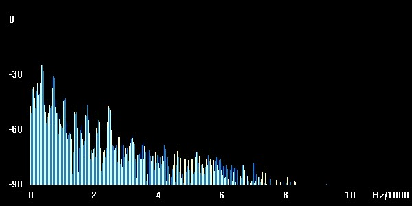
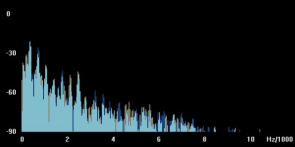
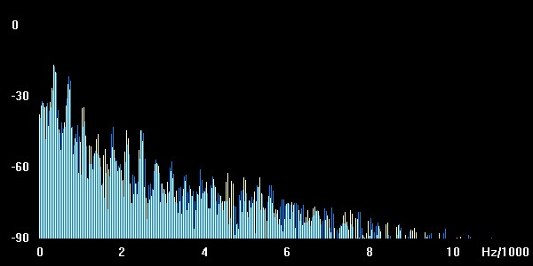
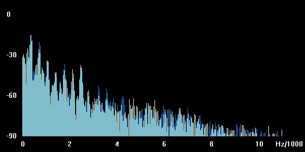
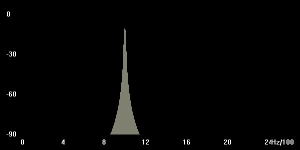
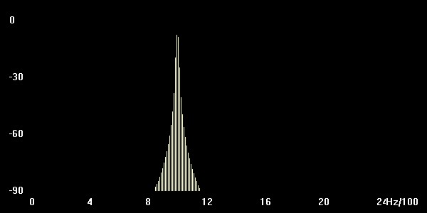
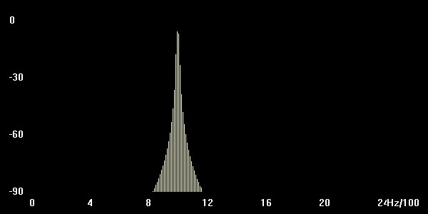
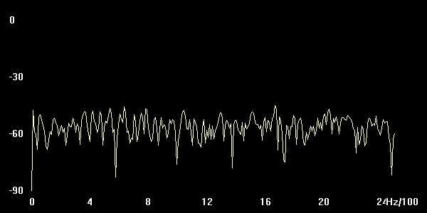
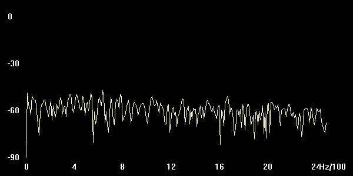

a:
Berechnung der Verstärkungsfaktoren
3db = 10^(3/20) = 1.41
6db = 10^(6/20) = 1.995
9db = 10^(9/20) = 2.81
9db = 10^(12/20) = 3,981
original
Ergebnisse
3db
6db
9db
12db
Spektrogramme in der selben Reihenfolge




Code:
double F = 3.981;
for (int i=0; i < samples;i++) {
double valuedouble = Double.valueOf(readWavFile.sound[i]);
double valuedoubleF = valuedouble * F;
if(valuedoubleF > (Math.pow(2,16)/2 - 1) ){
valuedoubleF = (Math.pow(2,16)/2 - 1);
}
if(valuedoubleF < -(Math.pow(2,16)/2)){
valuedoubleF =-(Math.pow(2,16)/2);
}
readWavFile.sound[i] = (short) valuedoubleF;
}
b:
bei einer Verstärkung von 9db wird die Verzerrung wahrnehmbar
c:
original
Ergebnisse
6db
9db
12db
Spektrogramme in der selben reihenfolge
  Klirrfaktor k = √ ( (69.6db)^2 + (65.9db)^2 ) / ( ( 88.9db)^2 + (69.6db)^2 + ( 65.9db)^2) = 0.54
a:
um eine Verzögerung von 10 ms zu erreichen müssen wir um 0.01 mal die samplerate(in unserem Fall 44100), also 441
für 100 ms sind das dann 4410 und für 200ms um 8820
Code:
double delay = 0.01;
int N = (int)(delay * sampleRate);
for(int i = 0; i < samples; i++) {
if( i-N >0){
readWavFile.sound[i] = (short)(readWavFile.sound[i] + 0.6 * readWavFile.sound[i-N]);
}
}
b:
Musik
original
10 ms
100ms
200 ms
Sprache
original
10 ms
100 ms
200 ms
a:
code
for(int i = 1; i < samples; i++){
readWavFile.sound[i] = (short) ((0.5 * readWavFile.sound[i]) + (0.45 * readWavFile.sound[i-1]));
}
Musik
original
Musik y(k) = 0.5 * x(k) - 0.45 * x(k-1)
Musik y(k) = 0.5 * x(k) + 0.45 * x(k-1)
b:
Noise y(k) = 0.5 * x(k) - 0.45 * x(k-1)
Noise y(k) = 0.5 * x(k) + 0.45 * x(k-1)
Spektrogramme
ohne filter
y(k) = 0.5 * x(k) - 0.45 * x(k-1)
y(k) = 0.5 * x(k) + 0.45 * x(k-1)

ersteres ist ein tiefpass filter und letzteres ist ein hochpass filter